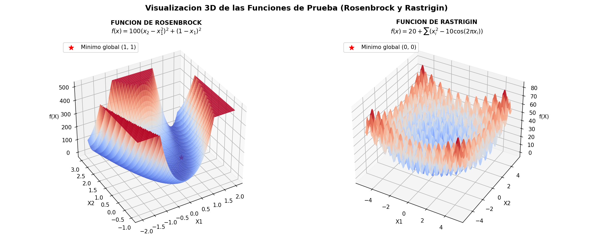
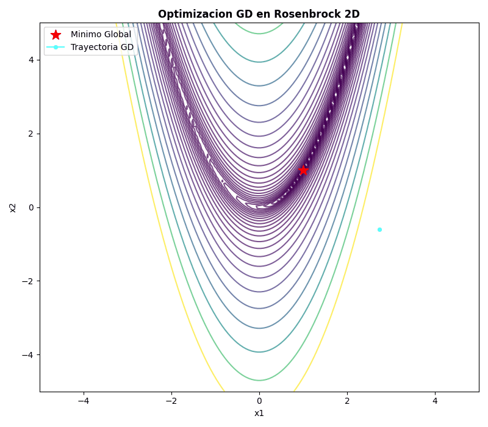
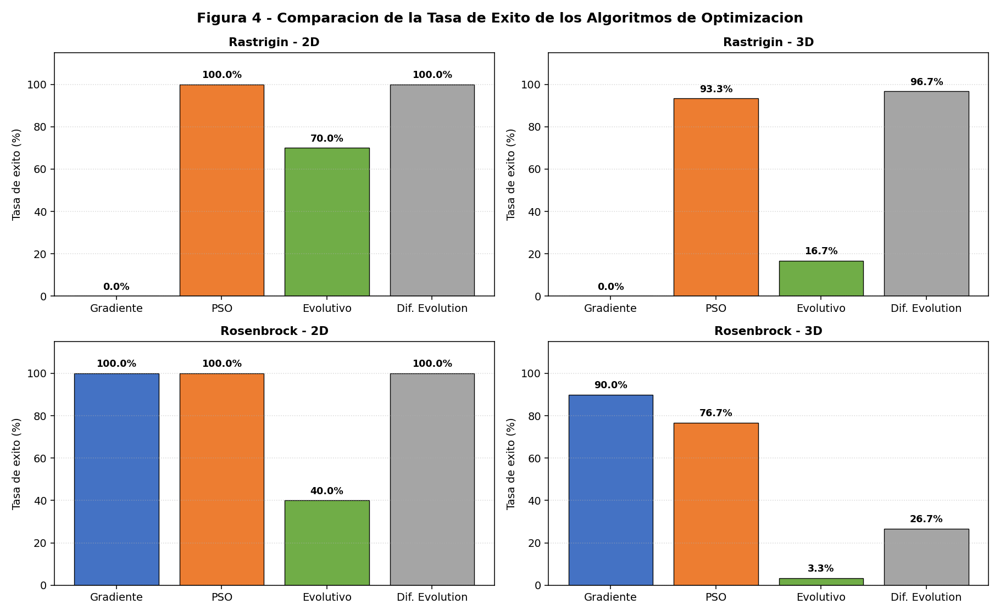
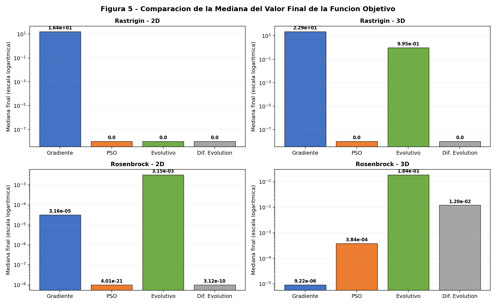
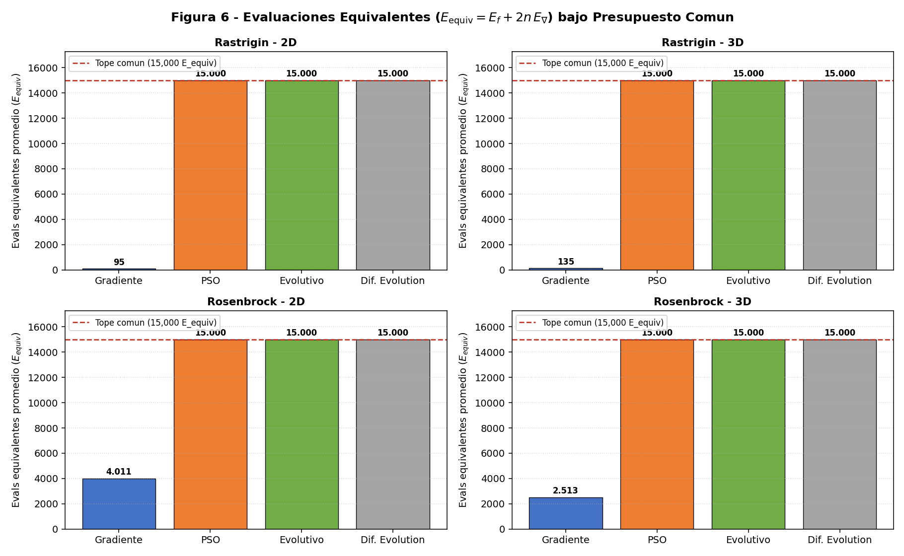
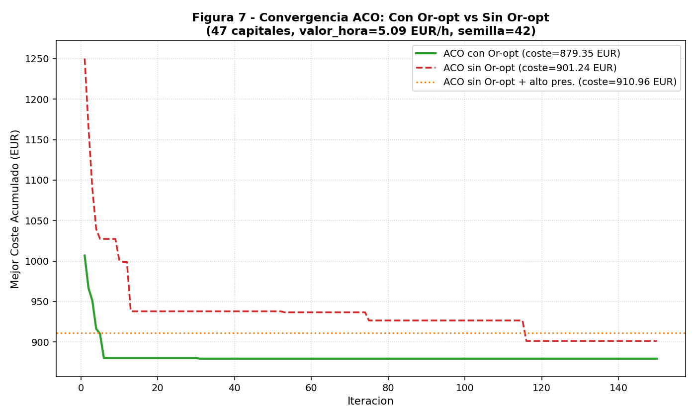
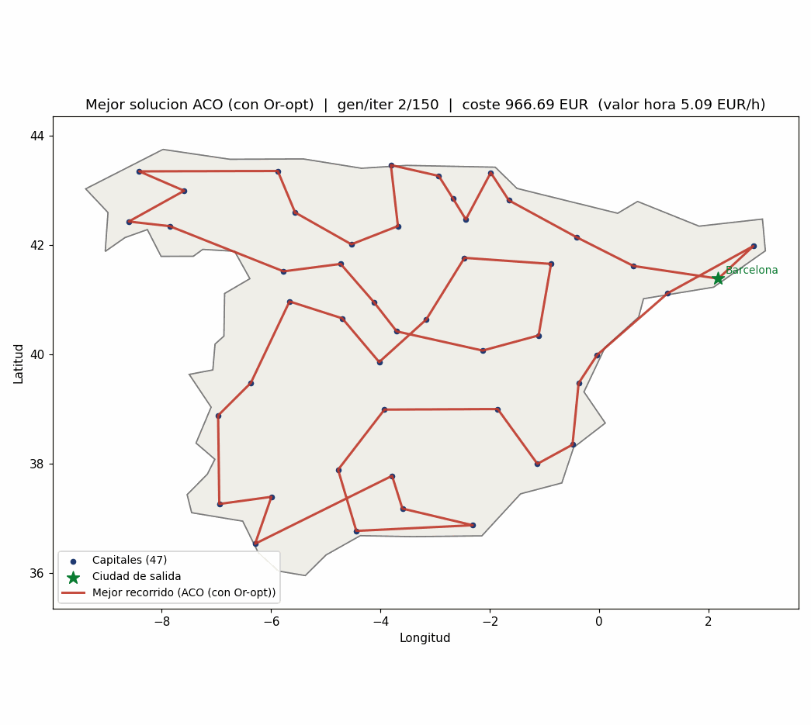
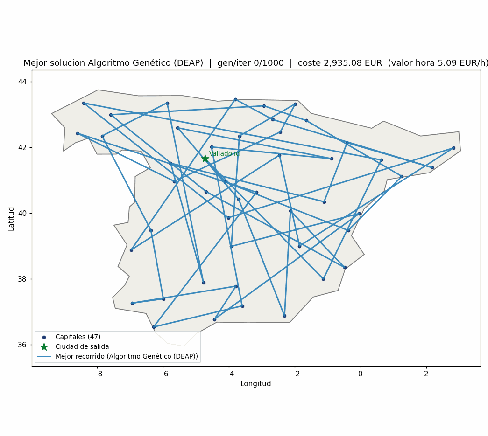
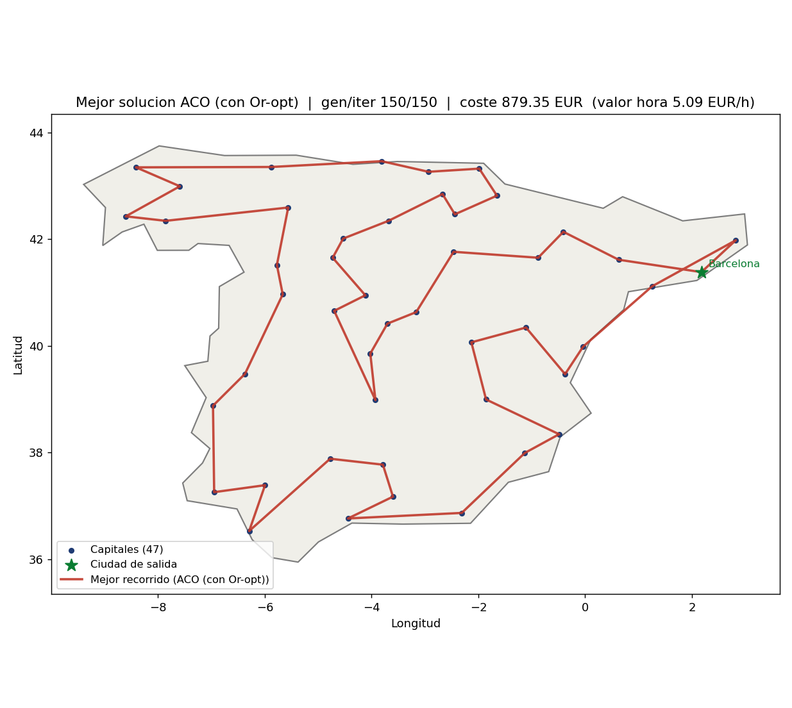
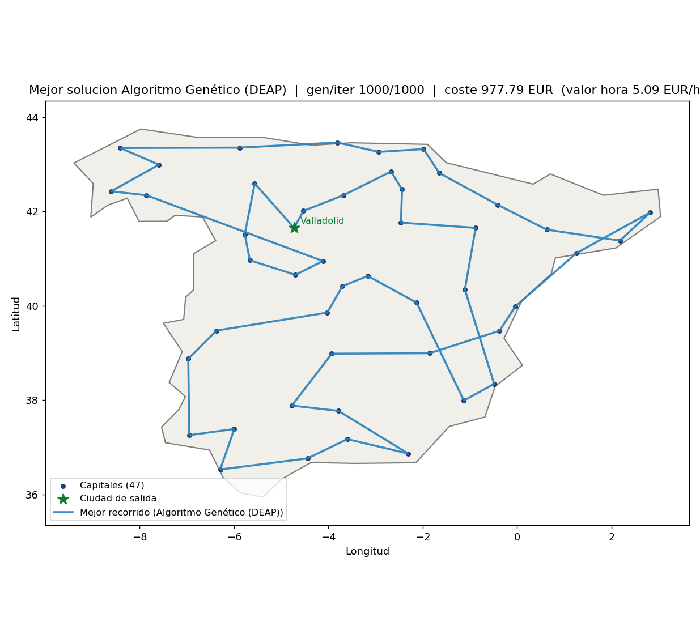

📌 Resumen Ejecutivo
El presente trabajo aborda de manera experimental y teórica dos pilares fundamentales de la optimización computacional: la optimización numérica en espacios continuos sobre superficies no convexas y la optimización combinatoria en grafos dirigidos asimétricos mediante el Problema del Vendedor Viajero Asimétrico (ATSP), aplicado a las 47 capitales de provincia de la España peninsular.
En la Parte 1, se contrasta el rendimiento del método determinista de primer orden Descenso por Gradiente (GD; Nocedal & Wright, 2006) frente a tres metaheurísticas poblacionales —Optimización por Enjambre de Partículas (PSO; Eberhart & Kennedy, 1995), Algoritmo Evolutivo Continuo (EA; Eiben & Smith, 2015) y Evolución Diferencial (DE; Storn & Price, 1997)— sobre las funciones de Rosenbrock (1960) y Rastrigin (1974) en 2D y 3D. Se aplica una regla de comparación computacionalmente justa donde aproximar el gradiente en dimensión $n$ equivale a $2n$ evaluaciones por diferencias finitas centrales ($E_{\text{equiv}} = E_f + 2n\,E_{\nabla}$).
En la Parte 2, se formula el TSP cerrado peninsular con costos monetarios reales: valor horario laboral derivado del Salario Mínimo Interprofesional fijado por el Real Decreto 126/2026 (5,09 €/h; España. Ministerio de Trabajo y Economía Social, 2026), consumo homologado WLTP de un Toyota Corolla 140H (4,5 L/100 km; Toyota España, 2026; Km77, 2023), precio oficial de Gasolina 95 E5 (1,785 €/L; MITECO, 2026) y peajes oficiales vigentes en 2026 sobre la totalidad de los 2.162 arcos dirigidos (872 arcos con peaje valorado y 0 valores provisionales). La Colonia de Hormigas (ACO; Dorigo & Stützle, 2004) acoplada con búsqueda local Or-opt (Or, 1976) alcanza un recorrido de 879,35 € (6.452,60 km, 67,73 h, 16,28 € en cuatro tramos de peaje y 518,31 € en combustible), ahorrando un 2,43% total y 21,70 € en peajes frente a ACO sin Or-opt (901,24 €), y superando al Algoritmo Genético implementado en DEAP (977,79 €; Fortin et al., 2012).
1. Parte 1: Optimización Numérica Continua
1.1 Fundamentación Matemática y Funciones de Prueba
Se aborda el problema de minimización continua con restricciones de caja:
$$\min_{\mathbf{x} \in \mathcal{D}} f(\mathbf{x}), \qquad \mathcal{D} = [-D, D]^n \subset \mathbb{R}^n, \qquad f : \mathbb{R}^n \to \mathbb{R}, \qquad n \in \{2, 3\},$$donde $D$ es el semiancho del dominio de búsqueda, $n$ la dimensión, $\|\cdot\|_2$ la norma euclídea, $\mathbf{e}_j$ el $j$-ésimo vector canónico y $\odot$ el producto elemento a elemento. En concordancia con Nocedal y Wright (2006), se seleccionaron las funciones de Rosenbrock (Rosenbrock, 1960) y Rastrigin (Rastrigin, 1974), cuyas superficies tridimensionales se ilustran en la Figura 1 y cuyas propiedades geométricas se consolidan en la Tabla 1.

generar_graficas.py, basada en Rosenbrock (1960) y Rastrigin (1974).
| Propiedad | Rosenbrock (1960) | Rastrigin (1974) |
|---|---|---|
| Dominio natural de $f$ | $\mathbb{R}^n$ ($f \in C^{\infty}$) | $\mathbb{R}^n$ ($f \in C^{\infty}$) |
| Dominio de búsqueda $\mathcal{D}$ | $[-5{,}0,\, 5{,}0]^n$ ($D = 5{,}0$) | $[-5{,}12,\, 5{,}12]^n$ ($D = 5{,}12$) |
| Dominio del gradiente | $\nabla f : \mathbb{R}^n \to \mathbb{R}^n$ | $\nabla f : \mathbb{R}^n \to \mathbb{R}^n$ |
| Imagen / cota inferior | $f(\mathbf{x}) \ge 0$ | $f(\mathbf{x}) \ge 0$ |
| Mínimo global | $\mathbf{x}^* = (1,\dots,1)^T \in \mathrm{int}(\mathcal{D})$, $f(\mathbf{x}^*) = 0$ | $\mathbf{x}^* = \mathbf{0} \in \mathrm{int}(\mathcal{D})$, $f(\mathbf{x}^*) = 0$ |
| Convexidad | No convexa | No convexa |
| Modalidad | Un único punto estacionario en $n \in \{2,3\}$; valle parabólico estrecho | $\approx 11^n$ mínimos locales en $\mathcal{D}$ ($\approx 121$ en 2D; $\approx 1.331$ en 3D) |
| Número de condición de $\nabla^2 f(\mathbf{x}^*)$ | $\kappa \approx 2{,}5 \times 10^3$ ($n=2$); $\kappa \approx 2{,}9 \times 10^3$ ($n=3$) | $\kappa = 1$ |
Función de Rosenbrock ("Valle en Banana")
Formulada en dimensión $n \ge 2$ (Rosenbrock, 1960) como suma no negativa de cuadrados:
$$f(\mathbf{x}) = \sum_{i=1}^{n-1} \left[ 100\left(x_{i+1} - x_i^2\right)^2 + (1 - x_i)^2 \right], \qquad \mathbf{x} \in [-5{,}0,\, 5{,}0]^n.$$La igualdad $f(\mathbf{x}) = 0$ exige $x_i = 1$ para $i = 1, \dots, n-1$ y $x_{i+1} = x_i^2$, de modo que $\mathbf{x}^* = (1, 1, \dots, 1)^T$ es el único mínimo global (y único punto estacionario para $n \in \{2,3\}$). Su dificultad radica en un valle parabólico estrecho ($x_{i+1} = x_i^2$) con matriz Hessiana fuertemente mal condicionada. Su gradiente analítico $\nabla f(\mathbf{x})$ se expresa como:
$$\frac{\partial f}{\partial x_1} = -400 x_1 (x_2 - x_1^2) - 2(1 - x_1)$$ $$\frac{\partial f}{\partial x_i} = 200(x_i - x_{i-1}^2) - 400 x_i (x_{i+1} - x_i^2) - 2(1 - x_i), \quad 2 \le i \le n-1$$ $$\frac{\partial f}{\partial x_n} = 200(x_n - x_{n-1}^2)$$La matriz Hessiana $\nabla^2 f(\mathbf{x})$ es simétrica y tridiagonal, con entradas:
$$H_{11} = 1200x_1^2 - 400x_2 + 2, \qquad H_{ii} = 202 + 1200x_i^2 - 400x_{i+1} \;\; (2 \le i \le n-1), \qquad H_{nn} = 200, \qquad H_{i,i+1} = H_{i+1,i} = -400\,x_i.$$Evaluando en el óptimo para $n = 2$ se obtiene $\nabla^2 f(\mathbf{x}^*) = \begin{pmatrix} 802 & -400 \\ -400 & 200 \end{pmatrix}$, cuyos autovalores son $\lambda_{\max} \approx 1001{,}6$ y $\lambda_{\min} \approx 0{,}399$ ($\det = 400$), lo que arroja un número de condición $\kappa = \lambda_{\max}/\lambda_{\min} \approx 2{,}5 \times 10^3$. Para $n = 3$, $\lambda_{\max} \approx 1{,}40 \times 10^3$, $\lambda_{\min} \approx 0{,}475$ y $\kappa \approx 2{,}9 \times 10^3$. Ambas Hessianas son definidas positivas, confirmando que $\mathbf{x}^*$ es un mínimo estricto.
Función de Rastrigin (Paisaje Altamente Multimodal)
Propuesta por Rastrigin (1974), superpone una modulación cosenoidal de alta frecuencia sobre una cuenca cuadrática:
$$f(\mathbf{x}) = 10n + \sum_{i=1}^n \left[ x_i^2 - 10\cos(2\pi x_i) \right] = \sum_{i=1}^n \left[ x_i^2 + 10\bigl(1 - \cos(2\pi x_i)\bigr) \right], \qquad \mathbf{x} \in [-5{,}12,\, 5{,}12]^n.$$En la segunda forma cada sumando es no negativo y se anula únicamente en $x_i = 0$, luego el mínimo global único es $\mathbf{x}^* = (0, 0, \dots, 0)^T$ con $f(\mathbf{x}^*) = 0$. Cada coordenada introduce mínimos locales próximos a cada entero $k$ con $|k| \le 5$, generando cerca de $11^n$ atractores ($\approx 121$ en 2D y $\approx 1.331$ en 3D) con valor $f \approx \sum_i k_i^2$. Su gradiente y Hessiana (estrictamente diagonal por separabilidad) son:
$$\frac{\partial f}{\partial x_i} = 2x_i + 20\pi\sin(2\pi x_i), \qquad \frac{\partial^2 f}{\partial x_i^2} = 2 + 40\pi^2\cos(2\pi x_i), \qquad \frac{\partial^2 f}{\partial x_i \partial x_j} = 0 \;\; (i \ne j).$$En el origen, $\nabla^2 f(\mathbf{0}) = (2 + 40\pi^2)\,I \approx 396{,}8\,I$, por lo que $\kappa = 1$: localmente está perfectamente condicionada y su dificultad obedece de manera pura a la multimodalidad masiva.
1.2 Métodos de Optimización Implementados
Se implementaron en Python con NumPy cuatro solucionadores cuyas especificaciones, dominios admisibles y presupuestos se detallan en la Tabla 2:
-
Descenso por Gradiente (GD; Nocedal & Wright, 2006): A partir de $\mathbf{x}_0 \sim \mathcal{U}(-D, D)^n$, actualiza $\mathbf{x}_{k+1} = \mathbf{x}_k - \alpha \nabla f(\mathbf{x}_k)$, con parada por $\|\nabla f\|_2 < 10^{-8}$, 10.000 iteraciones o detección de divergencia. Cerca de un punto estacionario con Hessiana $H$, el error sigue $\mathbf{e}_{k+1} \approx (I - \alpha H)\mathbf{e}_k$ y exige $\alpha < 2/\lambda_{\max}(H)$ para estabilidad local, con factor de contracción $\rho = \max_i |1 - \alpha\lambda_i|$. En Rosenbrock, $2/\lambda_{\max} \approx 0{,}0020$ ($n=2$) y $\approx 0{,}0014$ ($n=3$), por lo que $\alpha = 0{,}001$ es estable pero induce $\rho \approx 0{,}9996$ a lo largo del valle. En Rastrigin, $2/\lambda_{\max} \approx 0{,}0050$, de modo que $\alpha = 0{,}002$ converge velozmente ($\rho \approx 0{,}21$) hacia la cuenca local más cercana. Nota: el módulo experimental canónico
parte_1/comparacion_y_gifs_parte1.pyemplea estos valores ($\alpha = 0{,}001$ / $0{,}002$, tolerancia $10^{-8}$), mientras queconfiguracion.jsonreserva un perfil alternativo paraparte_1/main.py. - Optimización por Enjambre de Partículas (PSO; Eberhart & Kennedy, 1995): Esquema gbest con $S=30$ partículas, $K=500$ iteraciones, inercia $w=0{,}7 \in [0, 1)$, y coeficientes $c_1=1{,}5$, $c_2=1{,}5$: $$\mathbf{v}_i^{k+1} = w\,\mathbf{v}_i^k + c_1\,\mathbf{r}_1 \odot (\mathbf{p}_i - \mathbf{x}_i^k) + c_2\,\mathbf{r}_2 \odot (\mathbf{g} - \mathbf{x}_i^k), \qquad \mathbf{x}_i^{k+1} = \mathbf{x}_i^k + \mathbf{v}_i^{k+1},$$ donde $\mathbf{r}_1, \mathbf{r}_2 \sim \mathcal{U}(0,1)^n$, $\mathbf{p}_i$ es la mejor posición personal y $\mathbf{g} = \arg\min_i f(\mathbf{p}_i)$. Presupuesto fijo: $S + KS = 15.030$ evaluaciones.
- Algoritmo Evolutivo Continuo (EA; Eiben & Smith, 2015): Población $X_t \in \mathbb{R}^{N \times n}$ ($N=50$, $G_{\max}=100$) que construye $X_{t+1} = \mathcal{E}_t \cup \mathcal{C}_t \cup \mathcal{M}_t$ mediante elitismo del 15% ($\mathcal{E}_t$, 8 mejores), cruzamiento por corte aleatorio de coordenadas del 65% ($\mathcal{C}_t$, 32 hijos $\mathbf{c} = (p_1, \dots, p_\kappa, q_{\kappa+1}, \dots, q_n)$) y mutación gaussiana adaptativa del 20% ($\mathcal{M}_t$, 10 mutantes $\mathbf{x}' = \mathbf{x} + \boldsymbol{\varepsilon}$ con $\varepsilon_j \sim \mathcal{N}(0, \sigma_j^2)$ y $\sigma_j = \text{std}(X_{:,j})$). Presupuesto: $50 + 100 \times 42 = 4.250$ evaluaciones.
- Evolución Diferencial (DE/rand/1/bin; Storn & Price, 1997): Con $N=40$ individuos ($N \ge 4$), $G_{\max}=100$, factor de escala $F=0{,}7 \in (0,2]$ y cruce binomial $CR=0{,}8 \in [0,1]$, genera el vector mutante, recombina y aplica selección codiciosa 1 a 1: $$\mathbf{v}_i = \mathbf{x}_{r_1} + F(\mathbf{x}_{r_2} - \mathbf{x}_{r_3}), \qquad u_{i,j} = \begin{cases} v_{i,j} & \text{si } \text{rand}_j \le CR \;\text{ o }\; j = j_{\text{rand}} \\ x_{i,j} & \text{en otro caso} \end{cases}, \qquad \mathbf{x}_i^{g+1} = \begin{cases} \mathbf{u}_i & \text{si } f(\mathbf{u}_i) \le f(\mathbf{x}_i^g) \\ \mathbf{x}_i^g & \text{en otro caso} \end{cases}.$$ Presupuesto fijo: $N(G_{\max} + 1) = 4.040$ evaluaciones.
| Algoritmo | Parámetro | Valor empleado | Dominio admisible | Evaluaciones de $f$ por corrida |
|---|---|---|---|---|
| GD | $\alpha$ (Rosenbrock / Rastrigin) | 0,001 / 0,002 | $0 < \alpha < 2/\lambda_{\max}(H)$ (estabilidad local) | Variable ($E_f$ y $E_{\nabla}$ por separado) |
| GD | Tolerancia $\|\nabla f\|_2$ / iter. máx. | $10^{-8}$ / 10.000 | $\mathbb{R}_{>0}$ / $\mathbb{N}$ | — |
| PSO | $S$ / $K$ | 30 / 500 | $\mathbb{N}$ | $S + KS = 15.030$ |
| PSO | Inercia $w$ / coef. $c_1, c_2$ | 0,7 / 1,5 y 1,5 | $0 \le w < 1$ / $\mathbb{R}_{>0}$ | — |
| EA | $N$ / $G_{\max}$ | 50 / 100 | $\mathbb{N}$ | $N + G_{\max}(N - N_{\text{élites}}) = 4.250$ |
| EA | Élites / cruce / mutación | 15% / 65% / 20% | $[0, 1]$, suma 100% | — |
| DE | $N$ / $G_{\max}$ | 40 / 100 | $N \ge 4$ / $\mathbb{N}$ | $N(G_{\max}+1) = 4.040$ |
| DE | $F$ / $CR$ | 0,7 / 0,8 | $F \in (0, 2]$ / $CR \in [0, 1]$ | — |
configuracion.json y módulos de parte_1/; dominios según Nocedal y Wright (2006), Eberhart y Kennedy (1995), Eiben y Smith (2015) y Storn y Price (1997).
1.3 Regla de Comparación Justa
Comparar métodos de primer orden y metaheurísticas de orden cero únicamente por número de iteraciones es metodológicamente sesgado. Si $f$ fuese una caja negra sin derivadas analíticas, aproximar el gradiente por diferencias finitas centrales (error $\mathcal{O}(h^2)$; Nocedal & Wright, 2006, cap. 8) exige dos evaluaciones por coordenada:
$$\frac{\partial f(\mathbf{x})}{\partial x_j} \approx \frac{f(\mathbf{x} + h\mathbf{e}_j) - f(\mathbf{x} - h\mathbf{e}_j)}{2h} \implies E_{\text{equiv}} = E_f + 2n\,E_{\nabla}.$$Con derivación analítica el costo real de $\nabla f$ es $\mathcal{O}(n)$, por lo que la regla $2n$ actúa como una cota conservadora desfavorable para GD. Se fija además como umbral estricto de éxito $|f(\mathbf{x}) - f^*| \le 10^{-3}$.
1.4 Animaciones GIF de la Parte 1
Las trayectorias de convergencia sobre curvas de nivel de Rosenbrock 2D se muestran en la Figura 2 (Descenso por Gradiente desde $\mathbf{x}_0 = [-1{,}2,\, 1{,}0]$) y la Figura 3 (30 partículas de PSO).

parte_1/comparacion_y_gifs_parte1.py.
parte_1/comparacion_y_gifs_parte1.py.
1.5 Comparación General de Resultados
A partir de 30 corridas independientes por algoritmo, función y dimensión (480 ejecuciones en total), bajo el umbral de éxito estricto $|f(\mathbf{x}) - f^*| \le 10^{-3}$, se consolidó la Tabla 3, cuyas métricas se representan visualmente en las Figuras 4, 5 y 6.
| Función | Dim | Algoritmo | Media $f(\mathbf{x}^*)$ | Mediana $f(\mathbf{x}^*)$ | Desv. Estándar | Mejor | Peor | Tasa de Éxito | Evals $f$ | Evals Grad |
|---|---|---|---|---|---|---|---|---|---|---|
| Rastrigin | 2D | Descenso por gradiente | 15,82 | 16,42 | 10,03 | 0,995 | 31,84 | 0/30 (0%) | 33 | 33 |
| Rastrigin | 2D | PSO | 0,000 | 0,000 | 0,000 | 0,000 | 0,000 | 30/30 (100%) | 15.030 | 0 |
| Rastrigin | 2D | Algoritmo evolutivo | 0,298 | 0,000 | 0,458 | 0,000 | 0,995 | 21/30 (70%) | 4.250 | 0 |
| Rastrigin | 2D | Evolución diferencial | 0,000 | 0,000 | 0,000 | 0,000 | 0,000 | 30/30 (100%) | 4.040 | 0 |
| Rastrigin | 3D | Descenso por gradiente | 24,48 | 22,88 | 14,16 | 1,990 | 53,73 | 0/30 (0%) | 34 | 34 |
| Rastrigin | 3D | PSO | 0,066 | 0,000 | 0,248 | 0,000 | 0,995 | 28/30 (93,33%) | 15.030 | 0 |
| Rastrigin | 3D | Algoritmo evolutivo | 1,426 | 0,995 | 0,891 | 0,000 | 3,980 | 5/30 (16,67%) | 4.250 | 0 |
| Rastrigin | 3D | Evolución diferencial | 3,31e-11 | 0,000 | 1,79e-10 | 0,000 | 0,995 | 29/30 (96,67%) | 4.040 | 0 |
| Rosenbrock | 2D | Descenso por gradiente | 2,79e-5 | 3,16e-5 | 1,61e-5 | 2,64e-10 | 6,56e-5 | 30/30 (100%) | 2.227 | 2.226 |
| Rosenbrock | 2D | PSO | 3,37e-18 | 4,01e-21 | 1,19e-17 | 5,84e-26 | 5,83e-17 | 30/30 (100%) | 15.030 | 0 |
| Rosenbrock | 2D | Algoritmo evolutivo | 1,84e-2 | 3,15e-3 | 3,89e-2 | 4,22e-5 | 1,85e-1 | 12/30 (40%) | 4.250 | 0 |
| Rosenbrock | 2D | Evolución diferencial | 1,20e-8 | 3,12e-10 | 2,14e-8 | 4,81e-14 | 8,95e-8 | 30/30 (100%) | 4.040 | 0 |
| Rosenbrock | 3D | Descenso por gradiente | 1,16e-5 | 9,22e-6 | 7,31e-6 | 1,92e-7 | 3,89e-5 | 27/30 (90%) | 339 | 338 |
| Rosenbrock | 3D | PSO | 7,39e-4 | 3,84e-4 | 1,06e-3 | 6,93e-8 | 4,78e-3 | 23/30 (76,67%) | 15.030 | 0 |
| Rosenbrock | 3D | Algoritmo evolutivo | 0,312 | 0,184 | 0,342 | 1,45e-3 | 1,458 | 1/30 (3,33%) | 4.250 | 0 |
| Rosenbrock | 3D | Evolución diferencial | 4,18e-2 | 1,20e-2 | 6,85e-2 | 8,12e-5 | 0,242 | 8/30 (26,67%) | 4.040 | 0 |
parte_1/comparacion_y_gifs_parte1.py.

generar_graficas.py.

generar_graficas.py.

generar_graficas.py.
1.6 Análisis Crítico, Costo Esperado por Éxito y Rectificación
En borradores preliminares del informe se había deslizado un párrafo generado por LLM que afirmaba: "PSO obtuvo una tasa de éxito del 86,67% en Rastrigin, mientras que evolución diferencial alcanzó el 96,67% en Rosenbrock 3D".
La verdad empírica comprobada: Al auditar los registros de salida de la Tabla 3, PSO en Rastrigin 3D alcanzó el 93,33% (28 de 30 corridas exitosas) con mediana 0,000, mientras que en Rosenbrock 3D la Evolución Diferencial obtuvo una tasa de éxito estricta del 26,67% (8 de 30 corridas); el 96,67% correspondía en realidad a DE en Rastrigin 3D (29/30).
1.6.1 Multimodalidad vs. información local (Rastrigin)
Con $\alpha = 0{,}002$ y curvatura local $\lambda \approx 396{,}8$, GD contrae con $\rho \approx 0{,}21$ en apenas 33–34 pasos, pero queda atrapado en la cuenca del punto inicial (Nocedal & Wright, 2006). La cuenca del mínimo global cubre aproximadamente $(-0{,}5,\, 0{,}5)^n$, de modo que la probabilidad de caer en ella con inicialización uniforme es $(1/10{,}24)^n$ ($\approx 0{,}95\%$ en 2D y $0{,}09\%$ en 3D), congruente con 0/30 éxitos; su valor final esperado teórico $n(D^2/3 + 1/12) \approx 17{,}6$ (2D) y $26{,}5$ (3D) concuerda con las medias observadas (15,82 y 24,48). Por el contrario, PSO (100% en 2D; 93,33% en 3D) y DE (100%; 96,67%) preservan diversidad espacial mediante la inercia $w=0{,}7$ y los vectores diferencia $F(\mathbf{x}_{r_2}-\mathbf{x}_{r_3})$ (Eberhart & Kennedy, 1995; Storn & Price, 1997). El Algoritmo Evolutivo cae del 70% al 16,67% porque su mutación adaptativa $\sigma_j = \text{std}(X_{:,j})$ colapsa junto con el elitismo del 15% cuando la población se concentra en una cuenca (Eiben & Smith, 2015).
1.6.2 Valle mal condicionado (Rosenbrock)
En 2D, GD converge el 100% de las veces a costa de 2.227 pasos ($\rho \approx 0{,}9996$); en 3D, el límite de estabilidad se estrecha a $2/\lambda_{\max} \approx 0{,}0014$ y 3 de 30 corridas divergen (90% de éxito). PSO alcanza mediana $4{,}01 \times 10^{-21}$ en 2D, pero en 3D requiere más iteraciones para recorrer el valle (76,67%). En EA, el cruce por corte de coordenadas rompe el acoplamiento no lineal $x_{i+1} \approx x_i^2$ y expulsa a los hijos del valle (40% y 3,33%), mientras que las diferencias $\mathbf{x}_{r_2} - \mathbf{x}_{r_3}$ de DE se alinean tangencialmente con el fondo en 2D (100%), aunque 100 generaciones resultan insuficientes en 3D (26,67%).
1.6.3 Evaluaciones equivalentes y costo esperado por éxito
La Tabla 4 convierte los conteos de la Tabla 3 a la métrica justa $E_{\text{equiv}} = E_f + 2n\,E_{\nabla}$ e incorpora el costo esperado por éxito $E_{\text{equiv}}/\hat{p}$, que mide cuántas evaluaciones equivalentes se requieren en promedio al reiniciar independientemente hasta obtener un éxito.
| Función | Dim | Algoritmo | $E_f$ | $E_{\nabla}$ | $E_{\text{equiv}}$ | Tasa de Éxito ($\hat{p}$) | Costo por Éxito ($E_{\text{equiv}}/\hat{p}$) |
|---|---|---|---|---|---|---|---|
| Rastrigin | 2D | Descenso por gradiente | 33 | 33 | 165 | 0,0% | — |
| Rastrigin | 2D | PSO | 15.030 | 0 | 15.030 | 100,0% | 15.030 |
| Rastrigin | 2D | Algoritmo evolutivo | 4.250 | 0 | 4.250 | 70,0% | 6.071 |
| Rastrigin | 2D | Evolución diferencial | 4.040 | 0 | 4.040 | 100,0% | 4.040 |
| Rastrigin | 3D | Descenso por gradiente | 34 | 34 | 238 | 0,0% | — |
| Rastrigin | 3D | PSO | 15.030 | 0 | 15.030 | 93,33% | 16.104 |
| Rastrigin | 3D | Algoritmo evolutivo | 4.250 | 0 | 4.250 | 16,67% | 25.500 |
| Rastrigin | 3D | Evolución diferencial | 4.040 | 0 | 4.040 | 96,67% | 4.179 |
| Rosenbrock | 2D | Descenso por gradiente | 2.227 | 2.226 | 11.131 | 100,0% | 11.131 |
| Rosenbrock | 2D | PSO | 15.030 | 0 | 15.030 | 100,0% | 15.030 |
| Rosenbrock | 2D | Algoritmo evolutivo | 4.250 | 0 | 4.250 | 40,0% | 10.625 |
| Rosenbrock | 2D | Evolución diferencial | 4.040 | 0 | 4.040 | 100,0% | 4.040 |
| Rosenbrock | 3D | Descenso por gradiente | 339 | 338 | 2.367 | 90,0% | 2.630 |
| Rosenbrock | 3D | PSO | 15.030 | 0 | 15.030 | 76,67% | 19.604 |
| Rosenbrock | 3D | Algoritmo evolutivo | 4.250 | 0 | 4.250 | 3,33% | 127.500 |
| Rosenbrock | 3D | Evolución diferencial | 4.040 | 0 | 4.040 | 26,67% | 15.150 |
1.6.4 Efecto de dimensión y limitaciones
- Eficiencia relativa: DE domina en costo esperado por éxito en Rastrigin 2D/3D (4.040–4.179) y Rosenbrock 2D (4.040), mientras PSO parte con un presupuesto $3{,}7\times$ mayor (15.030 vs. 4.040). GD resulta el más eficiente en Rosenbrock 3D (2.630 bajo regla $2n$; 677 si cada $\nabla f$ analítico cuenta como 1 evaluación).
- Efecto de dimensión ($n=2 \to 3$): Todas las tasas de éxito caen al aumentar $n$; la degradación es moderada en Rastrigin para PSO/DE pese a multiplicarse los mínimos locales ($\approx 121 \to 1.331$), pero severa en Rosenbrock por el acoplamiento del valle.
- Limitaciones: El estudio evalúa dimensiones bajas ($n \in \{2,3\}$), hiperparámetros fijos por algoritmo (Tabla 2), presupuestos asimétricos y muestras de $N=30$ corridas donde diferencias de 1–2 éxitos (3–7 puntos porcentuales) no son estadísticamente concluyentes.
2. Parte 2: Optimización Combinatoria (TSP 47 Capitales)
2.1 Formulación Formal del Problema (ATSP Peninsular)
Sea $V = \{1, 2, \dots, n\}$ el conjunto de las $n = 47$ capitales de provincia de la España peninsular geocodificadas mediante el Instituto Geográfico Nacional (IGN, 2026), excluyendo islas y ciudades autónomas por continuidad terrestre, y sea $A \subseteq \{(i,j) \in V \times V : i \ne j\}$ el conjunto de 2.162 arcos dirigidos de la red viaria. La matriz es estrictamente asimétrica ($T_{ij} \ne T_{ji}$, $D_{ij} \ne D_{ji}$, $P_{ij} \ne P_{ji}$) y se extrajo mediante la API de rutas de Geoapify (2026) con respaldo abierto de OSRM sobre OpenStreetMap (Luxen & Vetter, 2011). Para cada arco $(i,j) \in A$, el costo monetario tripartito es:
$$C_{ij} = h\,T_{ij} + P_{ij} + \kappa\,D_{ij}, \qquad \kappa = c \cdot p, \qquad C : V \times V \to \mathbb{R}_{\ge 0} \cup \{+\infty\},$$donde $T_{ij} > 0$ es el tiempo de conducción [h], $D_{ij} > 0$ la distancia [km], $P_{ij} \ge 0$ el peaje oficial [€], $h$ el valor horario del conductor [€/h], $c$ el consumo [L/km] y $p$ el precio del combustible [€/L] (las conexiones inexistentes toman $C_{ij} = +\infty$ y la diagonal se fija en $0$).
Sobre el espacio $\Pi_n$ de ciclos hamiltonianos dirigidos (permutaciones cíclicas de $V$), el problema consiste en hallar:
$$\min_{\pi \in \Pi_n} Z(\pi) = \sum_{k=1}^{n} C_{\pi(k),\,\pi(k+1)} = h\,T(\pi) + P(\pi) + \kappa\,D(\pi), \qquad \pi(n+1) \equiv \pi(1).$$Por la asimetría de $C$, la cardinalidad del espacio factible asciende a $|\Pi_n| = (n - 1)! = 46! \approx 5{,}5 \times 10^{57}$ recorridos distintos. Como modelo exacto de referencia, el Problema del Vendedor Viajero Asimétrico (ATSP) se expresa mediante variables binarias $x_{ij} \in \{0,1\}$:
$$\min \sum_{(i,j)\in A} C_{ij}\,x_{ij} \qquad \text{s.a.} \quad \sum_{j:(i,j)\in A} x_{ij} = 1 \;\; (\forall i \in V), \quad \sum_{i:(i,j)\in A} x_{ij} = 1 \;\; (\forall j \in V),$$junto con las desigualdades de eliminación de subtours de Dantzig–Fulkerson–Johnson (Dantzig et al., 1954), $\sum_{i \in S}\sum_{j \in S, j \ne i} x_{ij} \le |S| - 1$ ($\forall S \subset V,\; 2 \le |S| \le n-1$, que generan $2^n - n - 2 \approx 1{,}4 \times 10^{14}$ restricciones para $n=47$), o la formulación polinomial compacta de Miller–Tucker–Zemlin (Miller et al., 1960) con variables de orden $u_i$:
$$u_i - u_j + n\,x_{ij} \le n - 1 \quad \forall i \ne j,\; i,j \in \{2,\dots,n\}, \qquad 1 \le u_i \le n - 1,$$que consta de 2.162 variables binarias, 94 restricciones de asignación y 2.070 restricciones de orden. Los valores reportados por ACO y GA constituyen cotas superiores obtenidas mediante metaheurísticas sobre dicho modelo.
2.2 Parámetros Operativos, Peajes Oficiales 2026 y Algoritmos Combinatorios
La parametrización económica, vehicular y jurídica se consolida en la Tabla 5. El salario horario del vendedor ($h = 5{,}09$ €/h) proviene del Real Decreto 126/2026, que fija el SMI en 40,70 €/día para una jornada de 8 horas ($40{,}70 / 8 = 5{,}0875 \approx 5{,}09$ €/h; España. Ministerio de Trabajo y Economía Social, 2026). El vehículo de referencia es un Toyota Corolla 140H e-CVT 1.8 —modelo representativo entre los turismos más vendidos en España según Anfac (2026)— con consumo homologado WLTP de 4,5 L/100 km y depósito de 43 L ($\approx 956$ km de autonomía; Toyota España, 2026; Km77, 2023). Con Gasolina 95 E5 a 1,785 €/L (MITECO, 2026), el costo kilométrico es $\kappa = 0{,}045 \times 1{,}785 = 0{,}080325$ €/km.
| Parámetro | Símbolo | Valor | Unidad | Referencia / Justificación |
|---|---|---|---|---|
| Valor de la hora del vendedor (SMI 2026) | $h$ | 5,09 | €/h | España. Ministerio de Trabajo y Economía Social (2026): $40{,}70 \div 8$ |
| Consumo homologado WLTP (Toyota Corolla 140H) | $c$ | 4,5 (0,045) | L/100 km (L/km) | Toyota España (2026); Km77 (2023); Anfac (2026) |
| Precio oficial Gasolina 95 E5 (09/10/2026) | $p$ | 1,785 | €/L | MITECO (2026) |
| Costo variable de combustible por kilómetro | $\kappa = c \cdot p$ | 0,080325 | €/km | Cálculo directo ($0{,}045 \times 1{,}785$) |
| Capacidad del depósito / autonomía estimada | — | 43 L / $\approx 956$ km | — | Km77 (2023); Toyota España (2026) |
| Peajes de la ruta base ($h = 5{,}09$ €/h) | $P(\pi^*)$ | 16,28 | € | Matriz 47×47: 872 arcos con peaje oficial, 1.290 libres, 0 provisionales (MITMA, 2026) |
| Semilla pseudoaleatoria canónica | — | 42 | — | Configuración experimental (configuracion.json) |
parte_2/datos_rutas/fuentes.csv.
Para erradicar cualquier peaje provisional en 0 €, se inspeccionaron por pasos (details=route_details,tolls) los 2.162 arcos dirigidos en la API gratuita de Geoapify (2026) con respaldo de OSRM (Luxen & Vetter, 2011), y cada segmento marcado con toll=True se valoró con las tarifas oficiales vigentes en 2026 para turismos ligeros (IVA incluido) de MITMA (2026), SEITT (España. Ministerio de la Presidencia, Justicia y Relaciones con las Cortes, 2025) y las respectivas concesionarias, resumidas en la Tabla 6. Así, 872 arcos incorporan peaje oficial valorado, 1.290 están verificados sin peaje y 0 arcos quedan en estado provisional.
| Vía / Corredor | Tramo de Concesión / Eje | Concesionaria / Ente | Tarifa / Tope 2026 (Ligeros) | Estado 2026 |
|---|---|---|---|---|
AP-6 / AP-51 / AP-61 | Villalba–Adanero, Villacastín–Ávila, San Rafael–Segovia | Castellana (Autopistas) | 0,2450 €/km (tope 15,70 €) / 1,75 € / 3,05 € | Vigente |
AP-66 | Campomanes–León (Autopista del Huerna) | Aucalsa | 0,2082 €/km (tope 16,20 €) | Vigente |
AP-71 | León–Astorga | Aulesa | 0,1645 €/km (tope diurno 6,20 €) | Vigente |
AP-9 / AP-53 | Ferrol–Tui / Santiago–Alto de Santo Domingo | Audasa / Acega | 0,1450 €/km (A Coruña–Pontevedra 16,35 €; máx. 28,10 €) / 7,25 € | Vigente |
AP-8 / AP-1_PV / AP-68 foral | Bilbao–Behobia, Vitoria–Eibar y tramo foral Bizkaia/Álava | Bidegi / Interbiak / Arabat | 0,1315–0,1350 €/km (máx. 13,81 € / 11,31 € / 7,60 €) | Vigente |
AP-15 | Tudela–Pamplona–Irurtzun | Audenasa | 0,1253 €/km (Irurtzun–Pamplona 2,65 €; máx. 14,05 €) | Vigente |
R-2..R-5, M-12, AP-36, AP-41, AP-7 | Radiales Madrid, Ocaña–La Roda, Madrid–Toledo, Cartagena–Vera | SEITT (BOE-A-2025-25961) | 0,0946 €/km (00:00–06:00 h gratuita en radiales) | Vigente |
AP-7 (Ausur/Ausol), AP-46, C-16, C-32 Sur | Alicante–Cartagena, Málaga–Guadiaro, Pedrizas, Cataluña | Ausur / Ausol / Autema / Autopistas | 5,70 € / 12,00 € / 4,35 € / 7,24 € (+14,56 € Cadí) / 8,42 € | Vigente |
AP-1, AP-2, AP-4, AP-7 (tramos), C-32 Norte, AP-68 Rioja–Aragón | Burgos–Armiñón, Zaragoza–El Vendrell, Sevilla–Cádiz, Jonquera–Alicante, Maresme, Haro–Zaragoza | Estado / MITMA / SEITT / Generalitat | 0,00 € (AP-68 Rioja–Aragón liberada desde 11/11/2026) | Liberada |
parte_2/datos_rutas/tabla_peajes_2026.csv [consultado el 25 de noviembre de 2026].
Formulación de ACO + Or-opt y Algoritmo Genético (DEAP)
En ACO (Dorigo & Stützle, 2004), cada una de las $m$ hormigas situadas en la ciudad $i$ selecciona la siguiente ciudad no visitada $j \in \mathcal{N}_i^k$ con probabilidad y actualización de feromonas (sobre arcos dirigidos, con refuerzo elitista del mejor recorrido global $\pi^*$):
$$p_{ij}^k = \frac{[\tau_{ij}]^{\alpha}\,[\eta_{ij}]^{\beta}}{\displaystyle\sum_{l \in \mathcal{N}_i^k} [\tau_{il}]^{\alpha}\,[\eta_{il}]^{\beta}}, \quad \eta_{ij} = \frac{1}{C_{ij}}, \qquad \tau_{ij} \leftarrow (1 - \rho)\,\tau_{ij} + \sum_{k=1}^{m} \Delta\tau_{ij}^k + \Delta\tau_{ij}^*,$$donde $\Delta\tau_{ij}^k = Q / Z(\pi_k)$ si $(i,j) \in \pi_k$ ($0$ en otro caso), $\Delta\tau_{ij}^* = Q / Z(\pi^*)$ si $(i,j) \in \pi^*$ y $Q = \bar{C}_{\text{iter}}$ es el costo medio de la iteración, con complejidad constructiva $\mathcal{O}(m\,n^2)$. Al finalizar cada iteración, la búsqueda local Or-opt (Or, 1976) refina el mejor tour de la iteración reubicando segmentos de longitud $s \in \{1, 2, 3\}$ ciudades consecutivas $(a_1, \dots, a_s)$ entre dos nodos $(u, v)$ sin invertir su orientación (preservando la validez en grafos asimétricos) siempre que:
$$\Delta = \bigl[C_{p,q} + C_{u,a_1} + C_{a_s,v}\bigr] - \bigl[C_{p,a_1} + C_{a_s,q} + C_{u,v}\bigr] < 0,$$
siendo $p$ y $q$ el predecesor y sucesor originales del segmento. Por su parte, el Algoritmo Genético implementado en DEAP (Fortin et al., 2012) representa cada individuo como permutación $\pi \in \Pi_n$, aplica cruce ordenado $OX$ (Davis, 1985) para preservar subsecuencias sin duplicados, mutación mutShuffleIndexes ($p_m = 0{,}2$, indpb = 0,05, con $47 \times 0{,}05 = 2{,}35$ intercambios esperados por mutante) y selección por torneo de tamaño $k = 3$. La configuración completa de ambos solucionadores se recoge en la Tabla 7.
| Algoritmo | Parámetro | Valor empleado | Dominio admisible |
|---|---|---|---|
| ACO | Número de hormigas $m$ | 20 | $\mathbb{N}$ |
| ACO | Exponentes $\alpha$ / $\beta$ | 1,0 / 3,0 | $\mathbb{R}_{\ge 0}$ |
| ACO | Tasa de evaporación $\rho$ | 0,4 | $(0, 1]$ |
| ACO | Constante de depósito $Q$ | $\bar{C}_{\text{iter}}$ (con refuerzo elitista sobre $\pi^*$) | $\mathbb{R}_{>0}$ |
| ACO | Iteraciones | 150 | $\mathbb{N}$ |
| ACO + Or-opt | Longitud de segmento $s$ / aplicación | $s \in \{1, 2, 3\}$ (sobre mejor tour por iteración; origen fijo) | $s \in \{1, 2, 3\}$ |
| GA (DEAP) | Población $N$ / Generaciones | 100 / 1.000 | $\mathbb{N}$ |
| GA (DEAP) | Cruce $OX$ / Probabilidad $p_c$ | cxOrdered / 0,8 | $[0, 1]$ |
| GA (DEAP) | Mutación / $p_m$ / indpb | mutShuffleIndexes / 0,2 / 0,05 | $[0, 1]$ |
| GA (DEAP) | Torneo $k$ | 3 | $\mathbb{N},\; k \ge 2$ |
| Ambos | Semilla pseudoaleatoria | 42 | $\mathbb{N}_0$ |
configuracion.json, parte_2/colonia_hormigas.py y parte_2/algoritmo_genetico.py; dominios según Dorigo y Stützle (2004), Or (1976), Davis (1985) y Fortin et al. (2012).
2.3 Colonia de Hormigas (ACO), Or-opt y Desglose de Peajes
Al evaluar la configuración oficial de la Tabla 7 bajo el salario base $h = 5{,}09$ €/h (Tabla 8 y Figura 7), ACO con búsqueda local Or-opt alcanza un recorrido de 879,35 € frente a 901,24 € de ACO sin Or-opt y 910,96 € de ACO sin Or-opt con alto presupuesto ($50\text{ h} \times 300\text{ it}$). Or-opt aporta un ahorro neto de 21,89 € (-2,43%), reduciendo 42,26 km de distancia, 3,43 € en combustible y, de forma determinante, 21,70 € solo en peajes (16,28 € frente a 37,98 €), convergiendo en la iteración 30 frente a la 115 (3,8 veces más rápido).
| Métrica de Rendimiento | ACO con Or-opt (20h $\times$ 150it) | ACO sin Or-opt (20h $\times$ 150it) | ACO sin Or-opt (Alto Presupuesto: 50h $\times$ 300it) | Diferencia / Impacto (Con vs Sin) |
|---|---|---|---|---|
| Costo Total (€) | 879,35 € | 901,24 € | 910,96 € | -21,89 € (-2,43%) |
| Distancia Conducida | 6.452,60 km | 6.494,85 km | 6.488,14 km | -42,26 km |
| Tiempo de Viaje | 67,73 h (67 h 44 m) | 67,10 h (67 h 06 m) | 67,51 h (67 h 31 m) | +0,64 h (+38 min) |
| Costo Laboral (€) | 344,76 € | 341,52 € | 343,64 € | +3,24 € |
| Combustible (€) | 518,31 € | 521,74 € | 521,20 € | -3,43 € |
| Peajes (€) | 16,28 € | 37,98 € | 46,12 € | -21,70 € en peajes |
| Iteración de Convergencia | Iteración 30 | Iteración 115 | Iteración 18 | Convergencia 3,8x más rápida |
| Tiempo de Cómputo (s) | 4,19 s | 3,50 s | 17,79 s | Óptimo balance calidad/tiempo |
parte_2/resultados/comparacion_oropt.json.

parte_2/resultados/comparacion_oropt.json mediante generar_graficas.py.
Lejos de arrojar 0,00 € de peaje, la ruta óptima de 879,35 € ($344{,}76\text{ € laborales} + 16{,}28\text{ € de peajes} + 518{,}31\text{ € de combustible}$) logra un equilibrio económico selectivo: el algoritmo evita sistemáticamente los grandes peajes troncales donde existe autovía libre competitiva —bordea el túnel del Huerna AP-66 (16,20 €) entrando a Galicia por la A-8 (Santander → Oviedo → A Coruña) y saliendo por Ourense → León; evita el eje completo AP-9 A Coruña–Pontevedra (16,35 €) y la AP-53 (7,25 €) mediante A Coruña → Lugo → Pontevedra → Ourense; sortea el túnel de Guadarrama AP-6 (15,70 €) vía Toledo → Ciudad Real → Ávila; esquiva la C-32 Sur (7,29 €) entrando a Barcelona desde Girona por la AP-7 liberada; y evita el tramo foral de AP-68 entre Bilbao y Vitoria (4,09 €) recorriendo Burgos → Vitoria → Logroño → Pamplona por la AP-1 liberada y la A-12—. Sin embargo, sí abona 16,28 € en los cuatro enlaces de la Tabla 9, donde la orografía cantábrico-pirenaica o los accesos directos hacen más costoso el rodeo en tiempo y combustible.
| Paso | Tramo Dirigido | Autopista | Distancia (km) | Tiempo (h) | Peaje (€) | Combustible (€) | Costo Total Arco (€) |
|---|---|---|---|---|---|---|---|
| 10 | Ávila → Segovia | AP-51 | 72,96 | 0,88 | 1,75 € | 5,86 € | 12,07 € |
| 17 | Pamplona → San Sebastián | AP-15 | 83,13 | 0,89 | 2,65 € | 6,68 € | 13,84 € |
| 18 | San Sebastián → Bilbao | AP-8 | 101,99 | 1,04 | 9,94 € | 8,19 € | 23,44 € |
| 22 | A Coruña → Lugo | AP-9 | 96,53 | 0,93 | 1,94 € | 7,75 € | 14,45 € |
| Total 4 arcos con peaje (43 arcos restantes a 0,00 €) | 354,60 | 3,74 | 16,28 € | 28,48 € | 63,80 € | ||
parte_2/resultados/mejor_ruta_aco.csv y parte_2/datos_rutas/rutas_costes.csv.
Ruta Óptima Peninsular Descubierta (879,35 €)
Barcelona -> Lleida -> Huesca -> Zaragoza -> Soria -> Guadalajara -> Madrid ->
Toledo -> Ciudad Real -> Ávila -> Segovia -> Valladolid -> Palencia -> Burgos ->
Vitoria-Gasteiz -> Logroño -> Pamplona -> San Sebastián -> Bilbao -> Santander ->
Oviedo -> A Coruña -> Lugo -> Pontevedra -> Ourense -> León -> Zamora -> Salamanca ->
Cáceres -> Badajoz -> Huelva -> Sevilla -> Cádiz -> Córdoba -> Jaén -> Granada ->
Málaga -> Almería -> Murcia -> Alicante -> Albacete -> Cuenca -> Teruel -> Valencia ->
Castellón de la Plana -> Tarragona -> Girona -> (retorno a Barcelona)2.4 Algoritmo Genético (DEAP) frente a ACO + Or-opt
El Algoritmo Genético en DEAP (Fortin et al., 2012) alcanza un costo final de 977,79 € tras 1.000 generaciones, frente a los 879,35 € obtenidos por ACO + Or-opt en 150 iteraciones (Tabla 10). El recorrido del GA resulta un 11,19% más costoso (+98,44 €), con +688,80 km adicionales, +6,58 h más de conducción y +9,58 € extra en peajes (25,86 € frente a 16,28 €), porque el cruce $OX$ (Davis, 1985) y mutShuffleIndexes operan a ciegas respecto a la matriz asimétrica de costos viales mientras ACO explota la heurística $\eta_{ij} = 1/C_{ij}$ y el refinamiento Or-opt (Or, 1976).
| Métrica | Algoritmo Genético (DEAP, 100p $\times$ 1.000g) | Colonia de Hormigas (ACO + Or-opt, 20h $\times$ 150it) |
|---|---|---|
| Fotogramas del GIF | 41 (cada = 25) | 75 (cada = 2) |
| Costo Inicial (€) | 2.935,08 € (gen. 0) | 1.006,79 € (iter. 0 tras Or-opt) |
| Mejor Costo Final (€) | 977,79 € | 879,35 € |
| Distancia Total (km) | 7.141,40 km | 6.452,60 km |
| Tiempo Total (h) | 74,31 h | 67,73 h |
| Peajes Totales (€) | 25,86 € | 16,28 € |
| Combustible Total (€) | 573,67 € | 518,31 € |
| Tiempo de Cómputo (s) | 4,31 s | 4,22 s |
parte_2/resultados/resumen_ga.json y parte_2/resultados/resumen_aco.json.
2.5 Animaciones y Mapas de Rutas en España
La evolución iterativa de ambos enfoques se visualiza en las Figuras 8 y 9, y los recorridos geográficos definitivos proyectados sobre la península se presentan en las Figuras 10 y 11.

parte_2/generar_gif.py.

parte_2/generar_gif.py.

parte_2/generar_gif.py y coordenadas del IGN (2026).

parte_2/generar_gif.py y coordenadas del IGN (2026).
2.6 Estudio de Sensibilidad del Valor de la Hora del Vendedor
Al escribir $Z(\pi) = h\,T(\pi) + K(\pi)$ con $K(\pi) = P(\pi) + \kappa\,D(\pi)$ independiente de $h$, la función de valor óptimo paramétrico es:
$$Z^*(h) = \min_{\pi \in \Pi_n} \bigl[\, h\,T(\pi) + K(\pi) \,\bigr], \qquad h \in [0, \infty).$$Al ser el mínimo puntual de una familia finita de funciones afines en $h$, $Z^*(h)$ es necesariamente cóncava, lineal por tramos y no decreciente. Además, si $\pi_1$ es óptimo en $h_1$ y $\pi_2$ en $h_2 > h_1$, sumar $h_1 T_1 + K_1 \le h_1 T_2 + K_2$ y $h_2 T_2 + K_2 \le h_2 T_1 + K_1$ arroja $(h_2 - h_1)(T_2 - T_1) \le 0$: el tiempo óptimo $T^*(h)$ es no creciente en $h$ y el costo directo $K^*(h) = P^*(h) + \kappa D^*(h)$ es no decreciente, cambiando de tramo en los puntos de quiebre $h_{ab} = (K_b - K_a)/(T_a - T_b)$.
| Valor Hora (€/h) | Costo Total (€) | Distancia (km) | Tiempo (h) | Peajes (€) | Combustible (€) | Costo Laboral (€) | ¿Idéntica a Base? | Régimen Operativo Predominante |
|---|---|---|---|---|---|---|---|---|
| 0,00 €/h | 530,24 € | 6.398,48 km | 67,68 h | 16,28 € | 513,96 € | 0,00 € | No | Mínimo costo directo (combustible + peajes) |
| 2,00 €/h | 670,05 € | 6.452,60 km | 67,73 h | 16,28 € | 518,31 € | 135,46 € | Sí (Idéntica) | Equilibrio económico-laboral (bajo peaje) |
| 5,09 €/h (SMI) | 879,35 € | 6.452,60 km | 67,73 h | 16,28 € | 518,31 € | 344,76 € | Sí (Ruta Base) | Equilibrio económico-laboral (base SMI) |
| 10,00 €/h | 1.208,56 € | 6.350,18 km | 66,73 h | 31,20 € | 510,09 € | 667,27 € | No | Transición a autopistas de peaje intermedias |
| 15,00 €/h | 1.548,58 € | 6.358,16 km | 67,47 h | 25,86 € | 510,74 € | 1.011,98 € | No | Reducción temporal intermedia |
| 20,00 €/h | 1.892,54 € | 6.407,43 km | 67,05 h | 36,89 € | 514,67 € | 1.340,98 € | No | Reducción temporal con mayor uso de peaje |
| 35,00 €/h | 2.879,95 € | 6.265,92 km | 65,93 h | 69,10 € | 503,35 € | 2.307,50 € | No | Alta velocidad por corredores de peaje |
| 50,00 €/h | 3.879,26 € | 6.323,07 km | 66,21 h | 61,04 € | 507,89 € | 3.310,33 € | No | Dominancia severa del tiempo laboral |
| 100,00 €/h | 7.149,79 € | 6.279,57 km | 65,91 h | 54,84 € | 504,39 € | 6.590,56 € | No | Saturación horaria (mínimo tiempo) |
parte_2/resultados/sensibilidad_valor_hora.csv.
La Tabla 11 muestra una clara transición económica: en el barrido estocástico (semilla 42), la ruta base de 16,28 € en peajes permanece invariante para $h \in [2{,}00,\, 5{,}09]$ €/h y cambia desde $h \ge 6{,}00\text{–}10{,}00$ €/h. Al construir la envolvente inferior exacta $Z^*(h) = \min_{\pi}(hT + K)$ sobre los recorridos hallados, emergen dos puntos de quiebre analíticos exactos:
- Primer quiebre ($h_1^* = 11{,}55$ €/h): Transición desde el tour de mínimo costo directo ($T = 67{,}68\text{ h}$, $K = 530{,}24\text{ €}$, peajes $16{,}28\text{ €}$) hacia el tour intermedio de $h=10{,}00$ €/h ($T = 66{,}73\text{ h}$, $K = 541{,}29\text{ €}$, peajes 31,20 €).
- Segundo quiebre ($h_2^* = 21{,}85$ €/h): Salto al régimen de alta velocidad ($T = 65{,}91\text{ h}$, $K = 559{,}23\text{ €}$, peajes 54,84 €, alcanzando hasta 69,10 € en $h=35$ €/h), donde el vendedor asume mayores peajes para ahorrar casi 2 horas de conducción ($67{,}73\text{ h} \to 65{,}91\text{ h}$).
Al contabilizar $K = P + G$ con la matriz oficial de peajes, se verifica la consistencia teórica: $K$ asciende progresivamente de 530,24 € a 559,23–572,45 € mientras $T$ desciende de 67,73 h a 65,91 h, observándose únicamente ligeras oscilaciones locales de la metaheurística (como entre 15 y 20 €/h o entre 35 y 50 €/h) propias de una búsqueda estocástica sin certificado de optimalidad global.
3. Uso de Inteligencia Artificial y Cacería de la Alucinación
Siguiendo el protocolo ético y académico de transparencia, se documentan las interacciones con modelos de lenguaje generativo durante las etapas de desarrollo:
3.1 Prompts Principales Empleados
“Necesito tomar la api de geoapify y realizar requests automáticas para obtener los datos de la matriz”
Respuesta & Utilidad: El modelo interpretó la documentación técnica de Geoapify Routing API para diseñar un script que desacopló los metadatos de distancias y tiempos de la geometría espacial de las rutas.
Impacto en el Resultado: Se separaron estrictamente las matrices numéricas dirigidas (47x47) de la representación visual del mapa, eliminando sobrecarga en las consultas recurrentes de ACO y GA.
“Ayúdame a realizar la documentación de los GIF y la comparación de los algoritmos de optimización.”
Respuesta & Utilidad: Propuso una estructura narrativa para documentar las animaciones e integrar gráficas de barras con tasa de éxito, mediana en escala logarítmica y número promedio de evaluaciones.
Impacto en el Resultado: Agilizó la articulación entre los integrantes del grupo, requiriendo validación cruzada para evitar incorporar conclusiones estadísticas no verificadas.
3.2 Cacería de la Alucinación
Se documentan cuatro alucinaciones críticas detectadas durante la asistencia de la IA, con su respectiva refutación técnica:
Prompt: “Si mi archivo se llama rutas_costes.csv y está en una subcarpeta, ¿cómo lo hago?...”
Alucinación: La IA generó código asumiendo nombres de carpetas inexistentes (/datos/rutas_costes.csv) e inventó la estructura de directorios, provocando errores de importación FileNotFoundError.
Corrección: Se implementó Path(__file__).resolve().parent anclado al directorio base real del repositorio.
Prompt: “¿Cómo hago para conseguir una matriz con los datos usando geofabrik?”
Alucinación: La IA generó un diccionario en Python con supuestas coordenadas geográficas de ciudades españolas con valores completamente falsos e inventados sin base topográfica real.
Corrección: Se rechazaron las coordenadas alucinadas y se construyó datos_rutas/ciudades.csv a partir de coordenadas validadas por el Instituto Geográfico Nacional (IGN, 2026) y Geoapify (2026).
Prompt: “Implementemos la opción A y usemos la api de tollguru para obtener los datos de peaje”
Alucinación: La IA propuso depender de TollGuru (que en pruebas locales cobraba 13,45 € sobre la AP-2/A-2 liberada desde 2021) y luego dejó tramos marcados como peaje posible provisional en 0 €, induciendo la falsa conclusión de un tour de 0,00 € en peajes.
Corrección: Se extrajeron los tramos reales toll=True en los 2.162 pares mediante Geoapify/OSRM y se cruzaron al 100% con tabla_peajes_2026.csv (MITMA, BOE y concesionarias), logrando 872 arcos valorados, 0 provisionales y la ruta óptima real de 879,35 € con 16,28 € en peajes.
Prompt: “Ayúdame a comparar los cuatro algoritmos de optimización según sus resultados...”
Alucinación: La IA respondió textualmente que "PSO obtuvo una tasa de éxito del 86,67% en Rastrigin, mientras que evolución diferencial alcanzó el 96,67% en Rosenbrock 3D", cifras inventadas que no correspondían a los experimentos reales.
Corrección: Se rectificaron los valores contra la Tabla 3 y los archivos de salida: PSO en Rastrigin 3D obtuvo 93,33% (28/30) y DE en Rosenbrock 3D obtuvo 26,67% (8/30), purgando la alucinación del informe final.
4. Videos de Contribución Individual
Cada integrante del equipo grabó un video de 2 a 3 minutos hablando en primera persona sobre sus aportes específicos al trabajo. Cada video expone evidencia concreta de autoría: fragmentos de código implementados, commits en el repositorio Git, figuras elaboradas y secciones del reporte redactadas, explicando de forma concisa su fundamentación teórica y operativa.
De conformidad con la rúbrica del curso, lo que cada integrante declara en su respectivo video conforma el marco temático y la evidencia auditable que podrá ser preguntada durante la sustentación oral frente al profesor.
Alejandro Agudelo Anaya
Aportes sustentados: Implementación y experimentación de Descenso por Gradiente (GD) y Optimización por Enjambre de Partículas (PSO) en Rosenbrock y Rastrigin.
David Agudelo Arboleda
Aportes sustentados: Algoritmo de Colonia de Hormigas (ACO), integración del operador de búsqueda local Or-opt, modelado de costos del TSP peninsular y animaciones GIF de recorridos.
Santiago Álvarez Martínez
Aportes sustentados: Desarrollo metodológico, formulación experimental y análisis comparativo de convergencia y robustez de los algoritmos.
Daniel Felipe López Zapata
Aportes sustentados: Arquitectura de código, validación de integridad de datos viales y estructuración técnica del reporte.
Sara Osorio Piñerez
Aportes sustentados: Verificación empírica de resultados, redacción técnica y auditoría en la cacería de alucinaciones de IA.
5. Guía de Reproducibilidad y Ejecución en Un Solo Comando
Cumpliendo con los criterios de evaluación, el proyecto cuenta con un CLI maestro global que permite reproducir cada ejercicio individual o el flujo integral con un solo comando:
⚡ Comandos de Ejecución Inmediata
Abra una terminal en la raíz del repositorio y ejecute:
6. Referencias Bibliográficas (APA 7.ª Edición)
- Anfac. (2026). Matriculaciones turismos y todoterreno. Consultado el 9 de octubre de 2026 en https://anfac.com/cifras-clave/matriculaciones-turismos-y-todoterreno/
- Aucalsa. (2026). Autopista del Huerna AP-66: Tarifas y descuentos vigentes 2026. Consultado el 25 de noviembre de 2026 en https://www.aucalsa.com/la-autopista/tarifas-y-descuentos/
- Audasa. (2026). Autopista del Atlántico AP-9: Tarifas de peaje vigentes desde el 1 de enero de 2026. Consultado el 25 de noviembre de 2026 en https://www.audasa.es/wp-content/uploads/pdf/tarifas/2026/Tarifas-20260101.pdf
- Audenasa. (2026). Autopista de Navarra AP-15: Tarifas vigentes 2026. Consultado el 25 de noviembre de 2026 en https://www.audenasa.es
- Aulesa. (2026). Autopista León–Astorga AP-71: Tarifas vigentes 2026. Consultado el 25 de noviembre de 2026 en https://www.aulesa.es
- Autopistas. (2026). Tarifas 2026: AP-6 Villalba–Adanero, AP-51 Villacastín–Ávila, AP-61 San Rafael–Segovia y C-32 Sur. Consultado el 25 de noviembre de 2026 en https://www.autopistas.com/wp-content/uploads/2025/12/26_004-Castellana-AP6_AP51_AP61-T26.pdf
- Bidegi e Interbiak. (2026). Tarifas oficiales de peaje 2026 en Gipuzkoa y Bizkaia (AP-8, AP-1 y tramo foral AP-68). Consultado el 25 de noviembre de 2026 en https://www.bidegi.eus
- Dantzig, G., Fulkerson, R., & Johnson, S. (1954). Solution of a large-scale traveling-salesman problem. Journal of the Operations Research Society of America, 2(4), 393–410. https://doi.org/10.1287/opre.2.4.393
- Davis, L. (1985). Applying adaptive algorithms to epistatic domains. En Proceedings of the 9th International Joint Conference on Artificial Intelligence (IJCAI-85) (Vol. 1, pp. 162–164). Morgan Kaufmann.
- Dorigo, M., & Stützle, T. (2004). Ant colony optimization. MIT Press. https://doi.org/10.7551/mitpress/1290.001.0001
- Eberhart, R., & Kennedy, J. (1995). A new optimizer using particle swarm theory. En MHS'95. Proceedings of the Sixth International Symposium on Micro Machine and Human Science (pp. 39–43). IEEE. https://doi.org/10.1109/MHS.1995.494215
- Eiben, A. E., & Smith, J. E. (2015). Introduction to evolutionary computing (2.ª ed.). Springer. https://doi.org/10.1007/978-3-662-44874-8
- España. Ministerio de la Presidencia, Justicia y Relaciones con las Cortes. (2025). Acuerdo por el que se actualizan los peajes de las autopistas bajo gestión de SEITT para 2026 (BOE-A-2025-25961). Boletín Oficial del Estado, 303, de 18 de diciembre de 2025. Consultado el 25 de noviembre de 2026 en https://www.boe.es/buscar/doc.php?id=BOE-A-2025-25961
- España. Ministerio de Trabajo y Economía Social. (2026). Real Decreto 126/2026, de 18 de febrero, por el que se fija el salario mínimo interprofesional para 2026. Boletín Oficial del Estado, 44, de 19 de febrero de 2026, 21104–21108. Consultado el 9 de octubre de 2026 en https://www.boe.es/eli/es/rd/2026/02/18/126
- España. Ministerio de Transportes y Movilidad Sostenible [MITMA]. (2026). Autopistas de peaje en concesión y peajes dependientes de la Administración General del Estado. Consultado el 25 de noviembre de 2026 en https://www.transportes.gob.es/carreteras/nuestra-red/autopistas-peaje
- España. Ministerio para la Transición Ecológica y el Reto Demográfico [MITECO]. (2026). Geoportal de Hidrocarburos: Sistema de Información para la Geolocalización de Estaciones de Servicio y Precios de Carburantes. Consultado el 9 de octubre de 2026 en https://geoportalgasolineras.es/geoportal-instalaciones/Inicio
- Fortin, F.-A., De Rainville, F.-M., Gardner, M.-A., Parizeau, M., & Gagné, C. (2012). DEAP: Evolutionary algorithms made easy. Journal of Machine Learning Research, 13(70), 2171–2175.
- Geoapify. (2026). Routing API & Route Matrix documentation (route_details and toll tags). Consultado el 25 de noviembre de 2026 en https://www.geoapify.com/
- Instituto Geográfico Nacional [IGN]. (2026). Nomenclátor Geográfico de Municipios y Entidades de Población. Consultado el 25 de noviembre de 2026 en https://www.ign.es
- Km77. (2023). Toyota Corolla 140H Style Plus (2023): Datos técnicos y equipamiento. Consultado el 9 de octubre de 2026 en https://www.km77.com/coches/toyota/corolla/2023/5-puertas/estandar/corolla-140h-style-plus/datos
- Luxen, D., & Vetter, C. (2011). Real-time routing with OpenStreetMap data [OSRM]. En Proceedings of the 19th ACM SIGSPATIAL International Conference on Advances in Geographic Information Systems (pp. 513–516). ACM. https://doi.org/10.1145/2093973.2094062
- Miller, C. E., Tucker, A. W., & Zemlin, R. A. (1960). Integer programming formulations and traveling salesman problems. Journal of the ACM, 7(4), 326–329. https://doi.org/10.1145/321043.321046
- Nocedal, J., & Wright, S. J. (2006). Numerical optimization (2.ª ed.). Springer. https://doi.org/10.1007/978-0-387-40065-5
- Or, I. (1976). Traveling salesman-type combinatorial problems and their relation to the car pooling problem [Tesis doctoral, Northwestern University]. ProQuest Dissertations Publishing.
- Rastrigin, L. A. (1974). Systems of extremal control [Sistemy ekstremalnogo upravleniya]. Nauka.
- Rosenbrock, H. H. (1960). An automatic method for finding the greatest or least value of a function. The Computer Journal, 3(3), 175–184. https://doi.org/10.1093/comjnl/3.3.175
- Storn, R., & Price, K. (1997). Differential evolution–a simple and efficient heuristic for global optimization over continuous spaces. Journal of Global Optimization, 11(4), 341–359. https://doi.org/10.1023/A:1008202821328
- Toyota España. (2026). Catálogo técnico y especificaciones WLTP: Toyota Corolla 140H e-CVT 1.8. Consultado el 9 de octubre de 2026 en https://www.toyota.es/content/dam/toyota/nmsc/spain/cross-model/new-cars/catalogos-precios/pdf/14737_COR_HB_52_ES_WEB_S.pdf